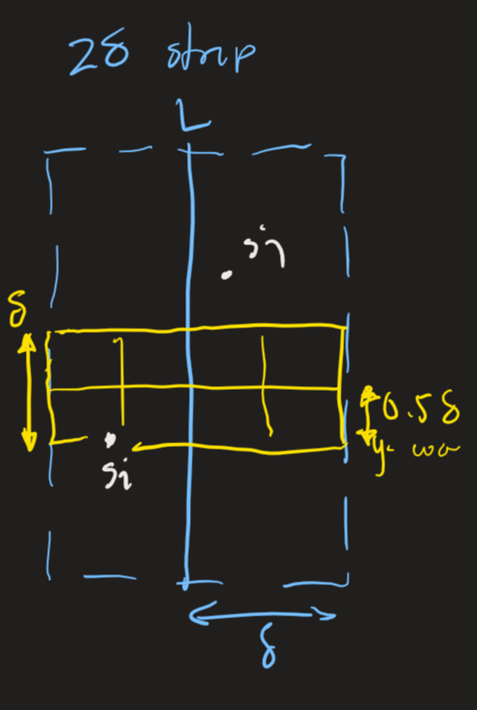
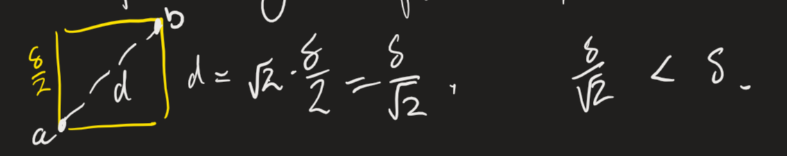

Introduction
These notes will be added to throughout the year. Check back later for more.
Greedy Algorithms
Overview
A Greedy Algorithm is one that builds up a solution from small steps, snatching or discarding the next available one without regard for the bigger picture, based on some simple rule(s).
Interval Scheduling
Interval Scheduing
You manage a scheduling system for a conference room, and want to schedule as many meetings as possible, with no overlap between meetings and no rearranging of meeting times.
Let us call meetings jobs, the general term for this problem. Job \(j\) starts at time \(s_j\) and finishes at \(f_j\). Two jobs are compatible [to be scheduled] if they do not overlap.
Our goal is to make an algorithm with the following inputs and outputs
- in: A sequence of jobs (which are just pairs \((s_j,f_j\))
- out: The maximum subset of mutually compatible jobs
We can use a greedy algorithm to solve this, but we need the rules that allow us to implement it. We'll sort the jobs by a specific rule, then take jobs in order, provided they are compatible with all the jobs already selected.
This ordering rule can be many things: earliest start time, earliest finish time, or shortest interval time being some possibilities. (You can try work out which one is correct, but I'm going to immediately reveal it below.)
Earliest Finish First
This is the correct sort rule. We can write an algorithm, for jobs \(j_i\) with starts/finishes \((s_i, f_i)\) for \(i = 1..n\).
Running Time
We can prove this algorithm runs with \(O(n \log n)\). This is because:
We know that sorting is at best \(O(n \log n)\).
The for loop, we can prove is only \(O(n)\). If the for loop is \(O(n)\), then the compatibility check must be \(O(1)\)
- If we keep a track of job \(j*\), which is the last job added to \(S\)
- \(j\) would be compatible with \(S\) if and only if \(s_j \geq f_{j*}\)
Thus comparison is indeed order \(O(1)\).
Proof of Correctness
Theorem. The Earliest Finish First (EFF) algorithm is optimal.
Proof. We will prove by contradiction. Let us assume EFF is not optimal.
Let \(i_1, i_2, ..., i_k\) be the set of jobs selected by EFF.
Let \(j_1, j_2, ..., j_m\) be the optimal set, with \(i_1 = j_1, i_2 = j_2, ... i_r = j_r\) for as large of a value of \(r\) as possible. If EFF is not optimal, then \(m > k\).
If job \(i_{r+1}\) does not exist, then by nature of the algorithm all jobs after \(i_r\) are incompatible with it. However, since \(i_r = j_r\), and we know that the optimal must strictly have more jobs than EFF, there must be compatible jobs after \(i_r\), thus we reach a contradiction.
If job \(i_{r+1}\) exists, it cannot finish later than \(j_{r + 1}\), because of the sorting rule. Thus we can just replace \(j_{r+1}\) with \(i_{r+1}\), and guarantee that all jobs \(j_r+2\) and afterwards is compatible. Thus the optimal is still optimal, and the condition that we have the largest possible \(r\) has been violated.
$$\tag*{$\Box$}$$Interval Partitioning
Interval Partitioning
You are in charge of scheduling lectures into lecture rooms. Lecture \(j\) starts at \(s_j\) and finishes at \(f_j\), and your goal is to find the minimum number of classrooms needed to schedule all lectures such that no two overlap.
- in: A sequence of jobs (which are just pairs \((s_j,f_j\))
- out: The smallest possible collection of sets (classrooms) of compatible jobs
(As the section implies) we use a greedy algorithm, and need to decide the ordering rule. This can be: Earlist start first, Earliest finish first, Shortest lecture first, or something else.
Earliest Start First
This is the correct sort rule.
Running Time
If we use a suitable data structure to store the rooms in, this algorithm can be \(O(n \log n)\).
First of all, sorting is \(O(n \log n)\). If we store all rooms in a Priority Queue, with the key being the finish time of the last lecture:
- When we allocate a new room, we insert it into the PQ.
- When we schedule \(j\) in \(k\), we increase the key of \(k\) to \(f_j\).
- To determine whether \(j\) is compatiable with any \(k\), we compare \(s_j\) to
findMinof the PQ.
The total number of searches in the priority queue is on order \(O(n)\), where each PQ operation is \(O(\log n)\), thus we get \(O(n \log n)\).
This implementation will always schedule the next compatible lecture in the room with the earliest finish time.
Definitions and Observations
Definition. The Depth of a set of open intervals is the max number of intervals that contain some point. Basically, the point where the most lectures overlap from all rooms determines the depth, which is the number of rooms.

Minimum number of rooms would equal the depth (since no lectures can overlap)
Also take note that the Earliest Start First (ESF) never schedules two incompatible lectures in one room.
Proof of Correctness
Theorem. ESF is optimal.
Proof. Let \(d =\) the number of rooms ESF allocates.
Room number \(d\) is opened because we need to schedule a lecture \(j\), which is incompatible with all lectures in rooms \(1 .. d-1\).
Because of the earliest start sort, each incompatible lecture in all prior rooms must have a start time \(\leq s_j\). Furthermore, all \(d\) lectures (including \(j\)) will have ended by \(f_j\).
Thus there will be \(d\) lectures overlapping at some time \(s_k + \epsilon\) for a number \(\epsilon\), which is our depth. Since depth = max number of rooms, this demonstrates that ESF is optimal. $$\tag*{$\Box$}$$
Minimising Lateness
Minimising Lateness
You are in charge of a single mainframe that can process one job at one time. Job \(j\) requires \(t+j\) units of time to process and is due at \(d_j\) (but can be late). (If \(j\) starts at \(s_j\) it finishes at \(f_j = s_j + t_j\).) Your goal is to schedule jobs to minimise maximum lateness.
Let lateness be defined \(\ell_j = \max(0, f_j - d_j)\), and max lateness is thus \(L = \max(\textrm{all } \ell_j)\).
- in: A sequence of jobs (which are just pairs \((t_j,d_j\))
- out: An ordering of jobs with the least amount of lateness.
Some rules we can consider are order by: shortest processing time, earliest deadline, or shortest slack (\(d_j-t_j\)).
Earliest Deadline First
Important Observations and Lemmas
1. There exists an optimal schedule with no idle time. If we have a schedule with idle time between jobs, which has no lateness, we can simply remove all idle time and still have no lateness.
2. Earliest Deadline First (EDF) has no idle time by design.
Definition. Given a schedule S, an inversion is a pair of jobs \(i, j\) where \(i < j\) (meaning i is due before j) and \(j\) is scheduled before \(i\).
3. The EDF schedule is the (unique) schedule with no inversions (by design).
4. If some schedule with no idle time has an inversion, then it has an adjacent inversion (inverted jobs are next to each other)
Proof. Let \(i-j\) be the closest inversion:
If \(i, j\) are adjacent, we are done. However, if we have a case like the following:
Schedule:...[ ][j][k][ ][ ][i][ ]...
Then there would exist a job \(k\) between \(j, i\), which is directly after \(j\).
If \(j > k\), then \(j-k\) is an adjacent inversion. Else if \(j < k\), then \(k > i\) and \(k-i\) is a closer inversion. Repeat until we encounter an adjacent inversion. $$\tag*{$\Box$}$$
Key Lemma. Eschanging two adjacent inverted jobs \(i, j\) reduces the number of inversions by one, and does not increase maximum lateness.
Proof. Let \(\ell\) denote the lateness before, and \(\ell'\) denote lateness after.
\(\ell'_k = \ell_k \; \forall k \neq i, j\), and \(\ell'_i \leq \ell_i\) when \(i\) is moved forward in the schedule.
if job \(j\) is not late, we are done. If it is late, then the new lateness \(\ell'_j = f'_j - d_j\) (by definition)
\begin{align}
\ell'_j &= f'_j - d_j \\
&= f_i - d_j \textrm{ (see diagram)} \\
&\leq f_i - d_i \textrm{ since } d_i \leq d_j \\
&\leq \ell_i
\end{align}
 Thus lateness does not increase. $$\tag*{$\Box$}$$
Thus lateness does not increase. $$\tag*{$\Box$}$$
Proof of Correctness
Theorem. EDF is optimal.
Proof. Let us define \(S*\) to be the optimal schedule with the fewest inversions. (We say that optimal solutions may have inversions).
By observation 1 \(S*\) will have no idle time.
Case 1 If \(S* \) has no inversions, then the schedule \(S\) generated by EDF will equal \(S*\) by observation 3.
Case 2. If \(S* \) has an inversion:
- Let \(i-j\) be an adjacent inversion (Obs. 4)
- Exchanging \(i, j\) decreases the number of inversions by 1, and does not increase max lateness (lemma)
- This contradicts the fewest inversion condition on \(S*\), as we can exchange all the way to no inversions and be (more) optimal - which is the schedule generated by EDF.
Strategies to Analyse Greedy Algorithms
Three strategies were explored for analysing and proving the optimality of greedy algorithms.
Greedy Stays Ahead
Demonstrating that after each incremental step, the greedy algorithm solution is at least as good as any other solution. This incremental building was employed in the proof of Interval Scheduling.
Structural Bound
Discover a simple bound / principle on the structure of the problem, which gives the lowest (most optimal) bound on possible solutions, and show that the greedy algorithm always reaches that bound. This was employed in Interval Partitioning with the depth bound.
Exchange Argument
By gradually transforming a hypothetical optimal solution (which is not the greedy algorithm one) into the greedy algorithm solution without hurting its quality. This was employed by swapping inversions in Minimising Lateness.
Divide and Conquer
Introduction
Divide and Conquer Paradigm
Divide and conquer is a strategy for solving algorithms where the main problem is divided into independent subproblems, which are then solved (conquered) recursively.
In general, this goes as follows:
- Divide a problem of size \(n\) into subgroups, e.g. 2 subproblems of size \(\frac{n}{2}\) - typically \(O(n)\)
- Solve the 2 subproblems recursively
- Combine the subproblems into one - typically \(O(n)\)
Merge Sort
Your classic divide and conquer sorting algorithm that you learned in GCSE.
Process
- For an input size (n), divide into a left half and a right half. - \(O(n)\)
- Recursively sort left and right halves (refer to above)
- Combine two sorted halves, maintaining the order. - \(O(n)\)
Combining halves
Suppose we have two sorted halves A and B, with \[A = [a_1, a_2, a_3], \; B = [b_1, b_2, b_3, b_4]\] Maintain two pointers to the sorted arrays. Scan A and B, comparing \(a_i\) and \(b_j\). Append the smaller value to the output list, and increment that pointer only. Finally, append any left over values from one array if the other has reached the end.
Linear for scanning, constant for comparing, constant for appending.
Implementation
Let's say mergesort has a procesing time of \(T(n)\). Thus, every subproblem (\(A, B\)) takes \(T(\frac{n}{2})\) time. The merge portion as we know is linear, and is \(\Theta(n)\).
Thus we can conclude \(T(n)\) is bounded by \(\Theta(n) + 2T(\frac{n}{2})\).
Useful recurrence relation
The above gives rise to a useful recurrence relation.
Definition. Let \(T(n)\) to be the number of comparisons mergesort makes proportional to list size \(n\). This satisfies the recurrence \[T(n) = \begin{cases} 0 & \textrm{if } n = 1 \\ T(\left \lfloor{\frac{n}{2}} \right \rfloor) + T(\left \lceil{\frac{n}{2}} \right \rceil) + n & \textrm{if } n > 1 \end{cases}\]
Complexity of merge sort
Claim. For mergesort, \(T(n) = O(n \log n)\).
Assume \(n\) is a power of 2. This does not affect the integrity much but makes proving easier.
The following proofs demonstrate important techniques so are shown by default. Clicking the drop-down bar (twice) will hide them.
Proof by tree
Assertion 1. \(T(n) = O(n \log n)\) if \(T(n)\) satisfies the following recurrence (given above assumption): \[T(n) = \begin{cases} 0 & \textrm{if } n = 1 \\ 2T(\frac{n}{2}) + n & \textrm{if } n > 1 \end{cases}\]
Proof. Represent the recurrence in tree form:
- On level \(i\), there are \(2^i\) nodes. Each node has \(\frac{n}{2^i} \) items so does that amount of work. Thus each level does \(n\) work.
- \(n = 2^k\) (is a power of 2), and we halve \(n\) every time, thus we do \(k\) halvings to get to \(2^0\): 1 item. Thus \(k\) = the number of levels = \(\log_2 n\).
Proof by induction
A proof method that may be easier to use (and certainly is easier to represent in HTML). We use the same proposition as above.
Proof. Induction on the size of \(n\).
- Base case: \(n=1\), thus \(T(1) = 0 = 1 \log_2 1\).
- Hypothesis: Assume \(T(n) = n \log_2 n\).
Let us look at \(T(2n)\). \begin{align} T(2n) &= 2T(n) + 2n\\ &= 2n \log_2 n + 2n \textrm{ by ind hyp.} \\ &= 2n (\log_2 n + 1) = 2n (\log_2 n + \log_2 2) \\ &= 2n \log_2(2n). \end{align} $$\tag*{$\Box$}$$
Extending inductive proof
So far we have been ignoring floors and ceilings. In fact, we can take as granted that floor and ceil may be ignored outright. However, here's an inductive proof for the assertion that uses floor and ceil.
Assertion 2. \(T(n) \leq n \left \lceil{\log_2 n} \right \rceil\) if \(T(n)\) satisfies the following recurrence. \(n\) is not assumed to be a power of 2.
Proof. Strong induction on \(n\). Instead of just assuming the prior is true, we assume all priors are true. The base case is the same and is true. Please note \(\log\) means \(\log_2\).
Let \(n_1 = \left \lfloor{n} \right \rfloor\) and \(n_2 = \left \lceil{n} \right \rceil\). Note that \(n_1 + n_2 = n\). The inductive hypothesis is that the recurrence is satisifed for all values up to \(n-1\).
Some easy-to-miss changes are circled. The circles are for emphasis and are otherwise meaningless. \begin{align} T(n) &\leq T(n_1) + T(n_2) + n \\ &\leq n_1 \left \lceil{\log n_1} \right \rceil + n_2 \left \lceil{\log n_2} \right \rceil + n \textrm{ by ind hyp.} \\ \because n_2 \geq n_1,\; T(n) &\leq n_1 \left \lceil{\log {\scriptstyle \enclose{circle}{\kern .06em n_2\kern .06em}} } \right \rceil + n_2 \left \lceil{\log n_2} \right \rceil + n \\ &\leq (n_1 + n_2) \left \lceil{\log n_2} \right \rceil + n \\ & \leq n \left \lceil{\log n_2} \right \rceil + n \\ & \leq n (\left\lceil{\log {\scriptstyle \enclose{circle}{\kern .06em n \kern .06em}} }\right\rceil + 1) + n \; *\\ & \leq n \left\lceil{\log n}\right\rceil . \end{align} $$\tag*{$\Box$}$$
The jump marked \(*\) is explained as follows: \begin{align} 2^{\log n_2} = n_2 &= \left\lceil{\frac{n}{2}}\right\rceil \\ &\leq \left\lceil{\frac{2^\left\lceil{\log n}\right\rceil }{2}}\right\rceil \\ &\textrm{since } n = 2^{\log n} \textrm{, } 2^{\left\lceil{\log n}\right\rceil } \textrm{ must be not lower. } \\ &\leq \frac{2^{\left\lceil{\log n}\right\rceil }}{2} \textrm{ since RHS must } \in \mathbb{Z} \\ &\leq 2^{\left\lceil{\log n}\right\rceil -1} \\ \therefore \log n_2 = \log{2^{\log n_2}} &= \left\lceil{\log n}\right\rceil - 1. \end{align}
If you're curious, right click -> show math as tex commands, it's nasty to write, thank god for vscode snippets.
Closest Pair of Points
Problem
Given \(n\) points in a euclidean plane, find the closest pair of points.
Possible non-divide and conquer solutions
Listed are some non-divide and conquer solutions, for interest.
Brute force: the "naive" algorithm, I think you can guess what this does. Solves in \(\Theta(n^2)\) but we can do better.
Dimension collapsing: we can consider only 1 dimension (say, x), sort the points and find the closest. This can be done in \(\Theta(n \log n)\) by sorting points, and comparing only consecutive ones. The only problem is it has counterexamples and may not always work depending on your configuration of points.
This relies on an assumption of non-degeneracy (see later).
We can extend this idea to doing dimension collapsing for 2D by repeating the process for both x and y, finding the points which are closest together on those two axes.
However this is also flawed and has counterexamples.
Division: We can try a technique more akin to divide and conquer - dividing the space up into halves or quadrants, then considering each quadrant separately, then the boundaries of quadrants. Ideally we'd want all quadrants to have an equal number of dots, but this is hard to guarantee.
The divide and conquer algorithm
Definition. the non-degeneracy assumption asserts that each point should have a unique \(x\) coordinate.
We divide by drawing a vertical line \(L : \frac{n}{2}\) points on each side. We conquer by recursively finding the closest point in each "half". We combine by checking if there's a closer pair that lies across the boundary.
It seems initially hard to do this more efficiently than the brute force \(n^2 \), but there are a few tricks we can employ.
Take the minimum distance from the pairs on either side, let it be \(\delta\). Say our two halves find closest points with length 12 and 21, \(\delta = \min(12, 21)\). It is the sufficient to only check points within \(\delta\) distance from L.
We need only sort the boundary points by their \(y\) coordinate, then compute the closest points in \(y\). This much may be quite easy to understand, but that still leaves us with quadratic time if we have to compute distances to all other points, but in fact, we only need to compute 7.
Every point checks against up to 7 others, and the minimum distance found is kept track of as the boundary points are iterated through. This actually will reduce our combine step down to linear time: \(O(n)\).
Why 7!?
To prove this, first let all boundary points be sorted by y coordinate, and numbered in increasing order, \(s_1, s_2, \dots, s_n\). \(s_i\) is the point with the \(i\)th largest y value.
Proposition. If \(|i-j| \geq 7\), the distance between \(s_i, s_j\) is at least \(\delta\).
Let us take any point \(s_i\) with some \(y\) coordinate. Consider a rectangle \(\delta\) tall and \(2\delta\) wide, spanning the boundary region with its bottom being the \(y\) coord of \(s_i\). Split this rectangle into 8 squares, \((0.5\delta)^2\).
 The furthest away two points could be in one single square is at opposite diagonals, \(\frac{\delta}{2}\) away. \(\frac{\delta}{2 } < \delta\) - this means that this is an impossible configuration: both points would be on the same side, with the distance between less than \(\delta\), which is defined to be the shortest distance from both sides.
Thus, there can only be one point per square. At most 7 other points may be valid options (have distances closer than \(\delta\)), so we need only check 7.
$$\tag*{$\Box$}$$Implementation
Running time
The labelled sections are as follows: (1) is \(O(n)\), (2) is \(2T(\frac{n}{2})\), (3) is \(O(n)\), (4) is \(O(n \log n)\), and 5 is \(O(n)\).
As to \(T(n)\), knowing the running time of dividing and combining steps we can get the recurrence \[ T(n) = \begin{cases} \Theta(1) & n = 1 \\ T(\left\lfloor{\frac{n}{2}}\right\rfloor ) + T(\left\lceil{\frac{n}{2}}\right\rceil ) + \Theta(n \log n) & \textrm{otherwise} \end{cases} \]
This resolves down to a running time of \(\Theta(n \log^2 n)\).
Improvements on running time
Later work has been done to push the algorithm down to \(O(n \log n\). This involves techniques such as preserving sorting of delta strip, returning lists of points sorted by x and y, and sorting points by merely doing one merge, which is linear time.
Master Theorem
Premise
The master theorem is a single method to solve all common recurrences of the form \[T(n) = aT(\frac{n}{b}) + f(n)\] Where \(a, b \in \mathbb{Z}^+\), \(b \geq 2\), and with \(T(0) = 0, \; T(1) = \Theta(1)\).
An input of size \(n\) makes \(a\) recursive calls of size \(\frac{b}{n}\). We also assume that \(f(n) \geq 0\).
Deriving via recursion trees
We can solve such recurrences with a recursion tree. (We assume that \(n\) is a power of \(b\).)
- Let \(a=\) branching factor
- \(a^i = \) number of subproblems at layer \(i\)
- \(1+\log_b n\) levels
- \(\frac{n}{b^i} =\) size of subproblems at layer \(i\).
Suppose \(T(n)\) satisfies \(T(n) = aT(\frac{n}{b}) + n^c\) for some c: i.e. \(f(n)\) is a polynomial.
Then at we have \(n^c\) work at layer 0, \(a(\frac{n}{b})^c\) at 1, \(a^2 \frac{n}{b^2}^c\) at 2, ..., \(a^i \frac{n}{b^i}^c\) at level \(i\), for a total of \(\log_b (n) \) levels.
The last \(\log_b n\)th level has \(a^i = a^{\log_b n} = n^{\log_b a}\): \[a^{\log_b n} = (b^{\log_b a})^{\log_b n} = b^{\log_b a \cdot \log_b n} = (b^{\log_b n})^{\log_b a} \]
At level \(i\), the work is \(a^i (\frac{n}{b^i})^c = a^i \frac{n^c}{b^{ic}} = n^c \frac{a^i}{b^{ic}} = n^c (\frac{a}{b^c})^i\).
Thus we can say \(T(n) = n^c \sum_{i=0}^{\log_b n} r^i\) where \(r = \frac{a}{b^c}\) (which is a constant).
Looking at this sum, we can get that \[ T(n) = n^c \sum^{\log_b n}_{i=0} r^i = \begin{cases} \Theta(n^c) &\textrm{if }r<1 &c > \log_b a\\ \Theta(n^c \log n) &\textrm{if } r = 1 &c = \log_b a \\ \Theta(n^{\log_b a}) &\textrm{if } r > &c < \log_b a 1 \end{cases} \] Since it is a gemetric series thus follows geometric series rules.
Master Theorem
Theorem. Let \(a \geq 1, b \geq 2, c > 0.\) Let \(T(n)\) be a function on \(\mathbb{Z}_{\geq 0} \) that satisfies the recurrence \[T(n) = aT(\frac{n}{b}) + \Theta(n^c)\] With \(T(0) = 0, T(1) = \Theta(1),\) and \(\frac{n}{b}\) is either \(\left\lceil{\frac{n}{b}}\right\rceil \) or \(\left\lfloor{\frac{n}{b}}\right\rfloor \). Then the following cases apply:
- \(c < \log_b a \implies T(n) = \Theta(n^{\log_b a})\) - recurring part dominates
- \(c = \log_b a \implies T(n) = \Theta(n^c \log n)\) - balances
- \(c > \log_b a \implies T(n) = \Theta(n^c)\) - processing part dominates
Overview of proof
- Prove theorem when \(b \in \mathbb{Z}\) and \(n\) is a power of \(b\)
- Extend the domains of reasoning to rationals or reals
- Deal with floor and ceil for at most 2 levels, e.g. \begin{align} \left\lceil{\frac{\left\lceil{\frac{\left\lceil{\frac{n}{b}}\right\rceil }{b}}\right\rceil }{b}}\right\rceil & < \frac{n}{b^3} + (\frac{1}{b^2} + \frac{1}{b} + 1) \\ &\leq \frac{n}{b^3} + 2 \;\; (\because b \geq 2) \end{align}
Theorem extension
We can replace \(\Theta\) with \(O, \Omega\) with no problem.
We can replace the initial conditions with \(T(n) = \Theta(1)\) for all \(n \leq n_0\) (which is a constant) and only require the recurrence holds for \(n > n_0\).
Examples
\(T(n) = 3T(\left\lfloor{\frac{n}{2}}\right\rfloor + 5n\)
\(a = 3, b = 2\) (and ignore floor). \(c = 1, 5n = O(n)\). \(\log_b a = \log_2 3 \approx 1.58\)
Case 1 of 3, thus \(T(n) = \Theta(n^{\log_2 3} )\)
\(T(n) = T(\left\lfloor{\frac{n}{2}}\right\rfloor) + T(\left\lceil{\frac{n}{2}}\right\rceil ) + 17n \)
Can "merge" the floors and ceils, thus \(a=2, b=2, c=1\).
\(T(n) = O(n \log n)\)
Gaps in master theorem
Master theroem will not work if the number of branches is not constant: \(T(n) = nT(\frac{n}{2 }) + n^2 \),
The number of subproblem branches is less than 1: \(T(n) = \frac{1}{2} T(\frac{n}{2}) + n^2\),
And cannot directly work if work done by subproblem is not \(\Theta(n^c)\): \(T(n) = 2T(\frac{n}{2 }) + n \log n\).